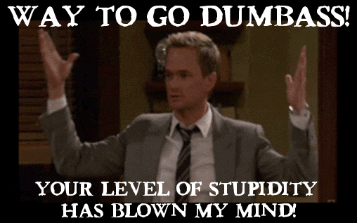

A couple of things I never got the chance to tell you.. Because I was not in berhampur physically and we never talked during my time in berhampur.
I seriously don’t know how to prove it to you. I was a friend to you all that time..
There were lot of people who asked me about what is happening.. I always responded that we are friends probably best friends.. Even ashwin asked me many times about this I always told him, we are best friends!!
You know what's the hardest thing about all this, No one generally gives me the benefit of the doubt that I treated you like my best friend all that time....
And you don't even have any possible way to prove that you were a friend all this time.. But I don't care about what anyone else thinks, I just hate it if you think the same too..
Come on, dude we had conversations like best friends!! we hanged out like best friends... !! Our conversations came never even close to that!!!
I don't know about everyone else, but I am a cool nerd I gift my bestfriends mythomagic cards!!
I even told ashwin on that day that I don’t want to bother you about any relationship stuff, because I am not interested in having relationships in college.. Which is apparent everytime we talk about other couples in the college and I practically call them dumb for whatever drama they are doing in the institute. Come on, after all the conversation we had that day in the ITI ground about me sharing about my responsibilities and family stuff and you telling about yours, how did you think I am gonna bother you or myself with relationship stuff..and you started going on and on about relationships when I just told you that I like you.
I wanted to say shhhhh Idiot stop!! But I couldn't stop the conversation.. Even in the text I mentioned, “Do you like me? (“no follow-up questions will be there”)”.
Which means I don't want to ask anything other than that....
Because I just wanted to know that, that's it, nothing more!!!
Come on, You are in Athena's Cabin, you should be SMARTTT!!
I felt like I am your best friend when you shared your stuff with me, I felt that you are comfortable with sharing all that stuff with me.
I don't know what physical gesture to do, I am very awkward. I still remember I patted on your head while leaving the bus.. which is very LLOLL!!
When I told you I like you, it means "I like you platonically, you dumbass!!".. I sit miles far whenever we hangout or go in the bus and I am not even comfortable giving a side-hug to gayathri(It's mostly because she stinks, don't tell her..)
And what about you telling me that ‘“I probably deserve it and I would understand if you don’t want me around and don’t want me to sit in the lab”” . I was super angry that day, when you told me this…
I wanted to scream SHUDDUPP DUMBASS, STOP TALKING ALL THAT CRAP!! and I stopped myself from telling this stuff that day because you already seemed very sad, i don’t want to continue.
I was hurt that day because you thought that I hanged out with you all this time because of that.. and I would stop talking to you just because you responded that way.. YOU KNOW ME BETTER, AGAIN DUMBASS!!
And you thought it's scary that I know a lot of stuff about you, It's not!! I promise I would not steal your identity.
I think I know too much about you becuase we are close friends and we hang out.. that's it!!
YOU SHOULD BE PUT IN SMITHSONIAN LIBRARY OF DUMBASSERY FOR THIS!!!
I probably should start counting how many times I called you "DUMBASS" LOL!!
Also, Sorry In advance, for calling you dumbass for couple of more times, I don't know it just adds humour to the writing..LOL
AND I SWEAR YOU NEVER LED ME ON TO ANYTHING..
It's probably you and your bio major brain of yours jumping to further explanations always... You were always like a good friend to me and I took a lot of advice from you (a lot in choosing projects!!)..
I just wanted to be honest with you about something that's been bothering me for few days.. That's the only thing that led me on for telling you...

I even told you that stuff that day, because you shared with me a lot and you continously keep accusing me of hiding things behind that smile.. And that is the only stuff I hid from you, the thought which came into my mind!!!! So, I felt guilty for not sharing this one thing!!
Dude, you asked me multiple times that how we became close friends in less time, it's because we are like-minded dumbass!!
I never had that much like-minded people around me. That's why you became my best friend in no time!!
It's too hard!! I stopped myself from saying this.. Whenever I wanted to share stuff (like funny stuff happening with rahul sharma and vivek ..my two absolutely inappropriate PIs and stuff about the contrast enhancement guyyy) , I only do that to you, and now you never talk like before…
You never come in to the lab to talk with me... I don't know why!!!